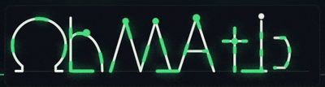
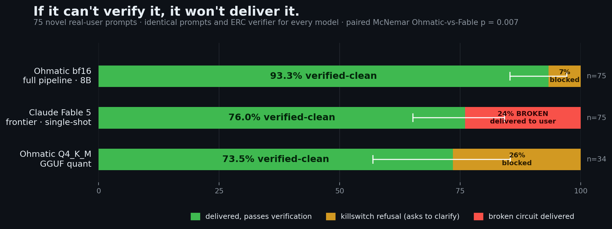

Describe a circuit. Get one that passed the rule checks.
Plain language in. A schematic that cleared automated electrical rule checks out, or a request to clarify. Never a broken circuit dressed up as a finished one.
If it can't verify it, it won't deliver it.

A verifier sits between the model and you
Every candidate design is validated by a deterministic electrical rule checker before it can reach you. If the model can't produce a passing design within its correction budget, Ohmatic refuses and asks for clarification. The broken candidate stays internal.
- NormalizeA fine-tuned T5 maps any phrasing onto the model's trained input; a faithfulness gate re-attaches dropped specifics.
- GenerateA fine-tuned Qwen3-8B emits a two-stage circuit: topology, then spatial layout.
- VerifyThe ERC engine checks connectivity, power integrity, pin legality, and structure.
- CorrectOn failure the model receives the findings and repairs its own design, up to 3 rounds.
- RefuseRetries exhausted → a clarification request, never an unverified schematic.
An 8B fine-tune that ships nothing broken
75 messy, underspecified, real-user prompts, authored by a model that is not in the evaluation, run end-to-end through the full pipeline and verified by the same engine that gates production.
Wilson 95% intervals; identical prompts and identical verifier per row. Quality loss converts to reduced availability (more clarification requests), never to bad output.

A bill of materials, with disclosed links
Once a design is verified, Ohmatic can build a parts list inside the desktop app and offer optional buy-links to component distributors. The schematic itself is never changed by this step. Procurement is a separate, post-design layer.
- Buy-links are search/deep-links you open in your own browser.
- Where a link is an affiliate link, a commission disclosure is shown beside it.
- No storefront scraping. No carts filled on your behalf. No undisclosed links.
Affiliate disclosure
Ohmatic participates in affiliate programs and may earn a commission from qualifying purchases made through distributor links it surfaces. This never changes the price you pay or which parts are recommended. The parts list comes from your verified design.
Runs on your machine
No account. No telemetry or analytics. Inference happens locally, so your prompts and designs stay on your device. Nothing leaves your machine unless you open a parts buy-link, which your browser handles like any other link.
# clone and boot the local stack git clone https://github.com/VittoriaLanzo/Ohmatic.git && cd Ohmatic ohmatic start # prints a local URL, no GPU needed to explore